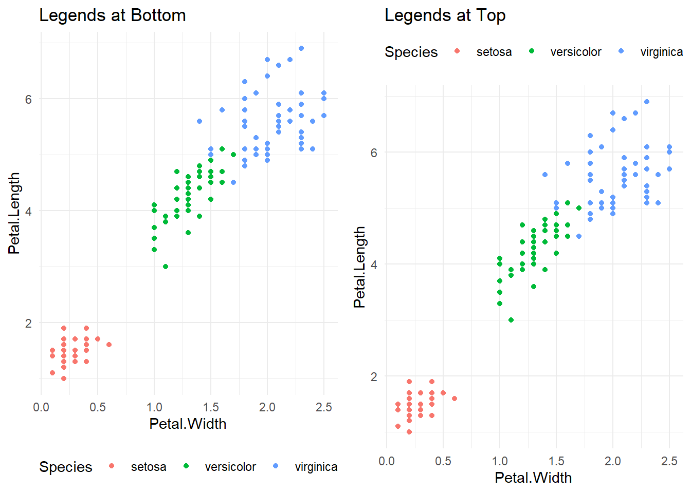
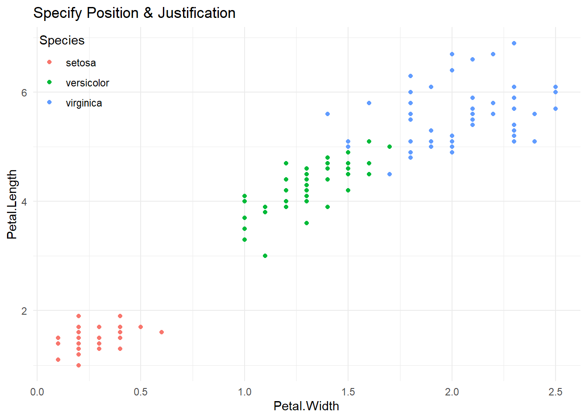
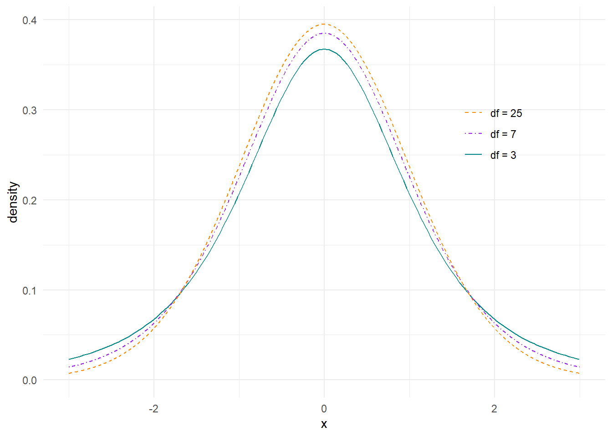
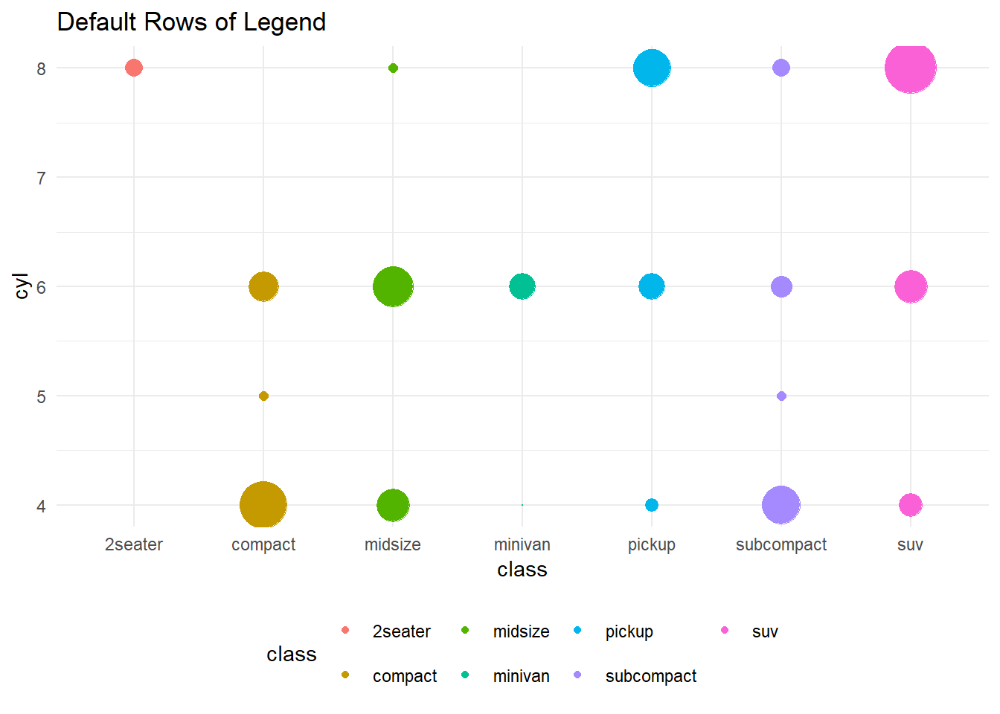
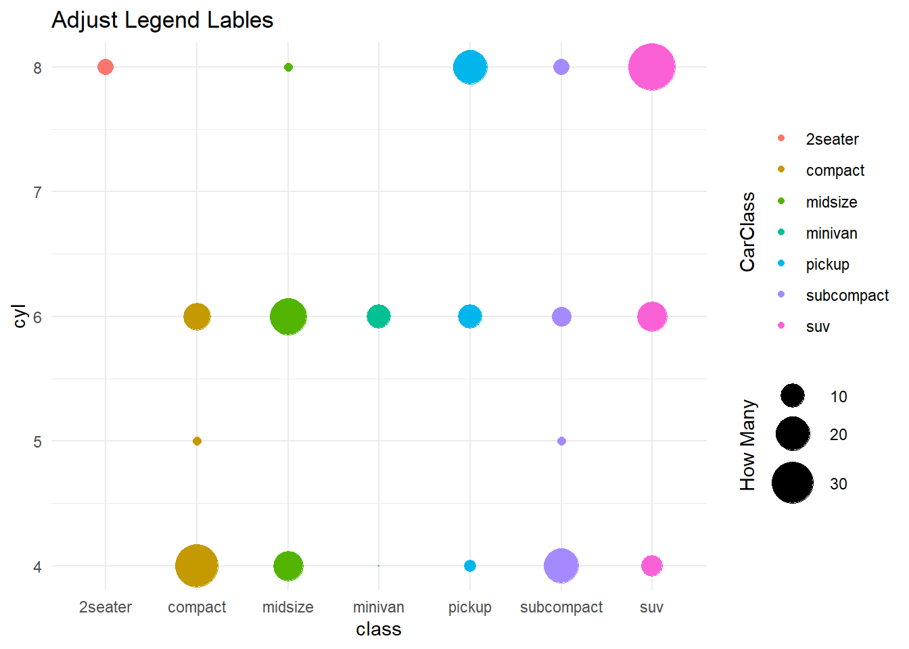
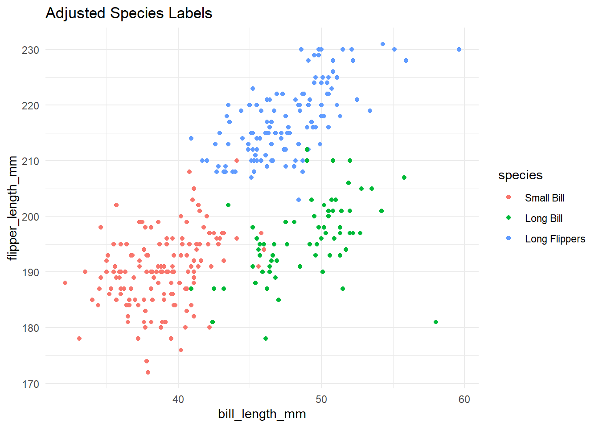
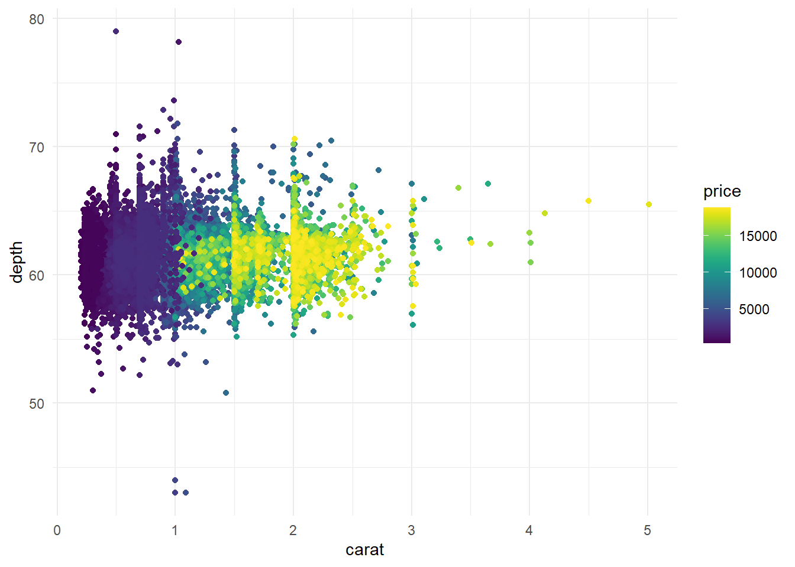

Legends
There are many things you can do with legends. This chapter of the ggplot2 book covers many more ideas than just what is listed below as well as this chapter from Data Visualization with ggplot2 by Aravind Hebbali. Additionally, this post from Tidyverse covers many more adjustments to legends.
1 Adjusting Legend Position
One can adjust the overall position of the legend to staple positions outside the graph or specified coordinates, which may have the legend within the graph.
1.1 Position Legend Outside Graph
Use gf_theme(legend.position = “bottom”) to adjust where the legend goes outside the graph. Choices include: bottom, top, left, or right.
Example: gf_theme(legend.position = “bottom”)
bottom = gf_point(Petal.Length~Petal.Width, data=iris, color = ~Species) %>%
gf_theme(legend.position = "bottom") %>%
gf_labs(title = "Legends at Bottom")
top = gf_point(Petal.Length~Petal.Width, data=iris, color = ~Species) %>%
gf_theme(legend.position = "top") %>%
gf_labs(title = "Legends at Top")
grid.arrange(bottom, top, nrow = 1)
1.2 Different Positions Outside Graph
To place legends in different positions around the graph (e.g. legend 1 on the top and legend 2 on the bottom), specify which legend goes where within a guides( ) option within the gf_theme layer.
Example: gf_theme(guides(color = guide_legend(position = “bottom”), size = guide_legend(position = “top”)))
Example (justification: gf_theme(legend.justification.top = “right”)
gf_count(cyl~class, data = mpg, color = ~class) %>%
gf_refine(scale_size(range = c(0.01, 12))) %>%
gf_labs(title = "Different Positions of Legends") %>%
gf_theme(guides(color = guide_legend(position = "bottom", nrow = 1),
size = guide_legend(position = "top"))) %>%
gf_theme(legend.justification.top = "right")1.3 Legend Position Within Graph (Coordinates)
In order to specify a position within the graph one must understand how R is defining position.
Top left: (0,1)
Bottom right: (1, 0)
Use the legend.position & legend.justification within a gf_theme layer to specify exactly where you want the legend positioned within your plot.
Example (position only): gf_theme(legend.position = c(0,1))
Example (position & justification): gf_theme(legend.position = c(0,1), legend.justification = c(0,1))
gf_point(Petal.Length~Petal.Width, data=iris, color = ~Species) %>%
gf_theme(legend.position = c(.8,0.2)) %>%
gf_labs(title = "Specify Position Only")gf_point(Petal.Length~Petal.Width, data=iris, color = ~Species) %>%
gf_theme(legend.position = c(0,1),
legend.justification = c(0,1)) %>%
gf_labs(title = "Specify Position & Justification")
2 Removing Legends
This section looks at how to suppress some or all legends.
## Remove all Legends
You can remove all legends from a single graph (or layer) using the show.legend = FALSE option or using gf_theme(legend.position = “none”)
Example (show.legend): gf_plot( Y ~ X , data = Dataset , color = ~Color , show.legend = FALSE)
Example (guides): gf_theme(legend.position = “none”)
gf_count(cyl~class, data = mpg, color = ~class) %>%
gf_refine(scale_size(range = c(0.01, 12))) %>%
gf_labs(title = "Show All Legends") gf_count(cyl~class, data = mpg, color = ~class, show.legend = FALSE) %>%
gf_refine(scale_size(range = c(0.01, 12))) %>%
gf_labs(title = "Remove All Legends: show.legend = FALSE")gf_count(cyl~class, data = mpg, color = ~class) %>%
gf_refine(scale_size(range = c(0.01, 12))) %>%
gf_labs(title = "Remove All Legends: legend.position") %>%
gf_theme(legend.position = "none")2.1 Removing Some Legends
In order to remove just some legends, specify which legend(s) to remove using the guides(color = FALSE) command in a gf_theme( ) statement.
Example (remove color): gf_theme(guides(color = FALSE))
Example (remove size): gf_theme(guides(size = FALSE))
Example (remove color & size): gf_theme(guides(size = FALSE, color = FALSE))
gf_count(cyl~class, data = mpg, color = ~class) %>%
gf_theme(guides(color = FALSE)) %>%
gf_refine(scale_size(range = c(0.01, 12)))%>%
gf_labs(title = "Remove Just Color Legend")gf_count(cyl~class, data = mpg, color = ~class) %>%
gf_theme(guides(size = FALSE)) %>%
gf_refine(scale_size(range = c(0.01, 12)))%>%
gf_labs(title = "Remove Just Size Legend")gf_count(cyl~class, data = mpg, color = ~class) %>%
gf_theme(guides(size = FALSE, color = FALSE)) %>%
gf_refine(scale_size(range = c(0.01, 12)))%>%
gf_labs(title = "Remove both in guides command")3 Orientation of Legends
Sometimes the default layout of the legend isn’t ideal - or maybe takes up too much space. This section explores ways to adjust the layout of the legend.
3.1 Reverse a legend
This first example is taken directly from a student collaboration. They wanted the legend to mirror what was seen in the graph (so order elements in the same way). There was a lot of adjusting within the graph, so the default legend didn’t match up. Note the many theme statements used to get the legend to do what was desired. Sadly, it did not work to combine theme statements.
To reverse a legend, use guide_legend(reverse = TRUE) or guide_colorbar(reverse = TRUE)
Example (legend): gf_theme(guides(fill=guide_legend(reverse=TRUE)))
Example (colorbar): gf_theme(guides(fill=guide_colorbar(reverse=TRUE)))
gf_bar(Type~., fill = ~DriveTrain , data=Cars93, position = position_fill()) %>%
gf_labs(x = "Proportion", y="Vehicle Segment",
title = "Default Legend") %>%
gf_refine(scale_fill_brewer( palette="Oranges"), scale_y_discrete(limits=rev)) %>%
gf_theme(theme_minimal()) %>%
gf_theme(legend.position = 'bottom')gf_bar(Type~., fill = ~DriveTrain , data=Cars93, position = position_fill()) %>%
gf_labs(x = "Proportion", y="Vehicle Segment",
title = "Reverse Legend") %>%
gf_refine(scale_fill_brewer( palette="Oranges"), scale_y_discrete(limits=rev)) %>%
gf_theme(theme_minimal()) %>%
gf_theme(legend.position = 'bottom') %>%
gf_theme(guides(fill=guide_legend(reverse=TRUE)))Colorbars can be reversed as well. Note that in both cases (above legend case) and the colorbar example below - the values & categories mapped to each color remain the same - it’s just the order of the values displayed in the legend that adjust.
gf_raster(Z~X+Y, data = df.volcano) %>%
gf_refine(scale_fill_gradient(low = "black", high = "purple")) %>%
gf_theme(theme_void) %>%
gf_labs(title = "Default Colorbar")gf_raster(Z~X+Y, data = df.volcano) %>%
gf_refine(scale_fill_gradient(low = "black", high = "purple")) %>%
gf_theme(theme_void) %>%
gf_theme(guides(fill=guide_colorbar(reverse=TRUE))) %>%
gf_labs(title = "Reverse Colorbar")3.2 Horizontal or Vertical Legends
To specify a legend to display either horizontal or vertical, specify the legend.direction within the theme command.
Example: gf_theme(legend.direction = “horizontal”)
gf_point(Petal.Length~Petal.Width, data=iris, color = ~Species) %>%
gf_theme(legend.position = c(0,1),
legend.justification = c(0,1)) %>%
gf_labs(title = "Default Orientation")
gf_point(Petal.Length~Petal.Width, data=iris, color = ~Species) %>%
gf_theme(legend.position = c(0,1),
legend.justification = c(0,1),
legend.direction = "horizontal") %>%
gf_labs(title = "Horizontal Orientation")3.3 Specifying Rows & Cols for a Legend
gf_count(cyl~class, data = mpg, color = ~class) %>%
gf_theme(legend.position = "bottom") %>%
gf_theme(guides(size = FALSE)) %>%
gf_refine(scale_size(range = c(0.01, 12)))%>%
gf_labs(title = "Default Rows of Legend") gf_count(cyl~class, data = mpg, color = ~class) %>%
gf_theme(legend.position = "bottom") %>%
gf_theme(guides(size = FALSE,
color = guide_legend(nrow = 1))) %>%
gf_refine(scale_size(range = c(0.01, 12)))%>%
gf_labs(title = "Adjust Rows of Legend", subtitle = "nrow = 1") 
4 Legend Labels
To adjust the heading label, you can use the gf_labs( ) layer. We also have the ability to adjust the labels within a scale or range of values within the legend.
4.1 Adjust Legend Title
To adjust the legend title, use gf_labs( ).
Examples: gf_labs(color = “Color Title”, fill = “Fill Title”, size = “Size Title”)
Example (split on Multiple Lines): gf_labs(color = “Line 1\nLine 2”)
gf_count(cyl~class, data = mpg, color = ~class) %>%
gf_refine(scale_size(range = c(0.01, 12))) %>%
gf_labs(title = "Adjust Legend Lables", color = "Car\nClass", size = "How Many") 
4.1.1 Position of Legend Title
If you happen to want to adjust the position of the title of the legend, you can do so by specifying the legend.title.position (and subsequently the angle & positioning of that title).
Example: gf_theme(legend.title.position = “left”, legend.title = element_text(angle = 90, hjust = 0.5))
gf_count(cyl~class, data = mpg, color = ~class) %>%
gf_refine(scale_size(range = c(0.01, 12))) %>%
gf_labs(title = "Adjust Legend Lables", color = "CarClass", size = "How Many") %>%
gf_theme(legend.title.position = "left", legend.title = element_text(angle = 90, hjust = 0.5))4.2 Adjust Labels Within Legend
To adjust labels and/or scales within a legend - you actually adjust the scale_*_ within a gf_refine layer. You do need to be careful that the number of breaks and number of labels match. At times you’ll need to specify the breaks so that you can be certain of the number of labels needed.
4.2.1 Adjust Categorical Labels
Adjust labels in a scale_*_discrete( ) statement (where * is the aesthetic changed, color, fill, size, shape, etc.).
Example: scale_color_discrete(labels = c(“Label 1”, “Label 2”, “Label 3”))
gf_point(flipper_length_mm~bill_length_mm, data = penguins, color = ~species)%>%
gf_labs(title = "Default Species Labels")
gf_point(flipper_length_mm~bill_length_mm, data = penguins, color = ~species)%>%
gf_refine(scale_color_discrete(labels = c("Small Bill", "Long Bill", "Long Flippers"))) %>%
gf_labs(title = "Adjusted Species Labels")
gf_point(flipper_length_mm~bill_length_mm, data = penguins, color = ~species)%>%
gf_refine(scale_color_manual(values = c("darkorange","purple","cyan4"),
labels = c("Small Bill", "Long Bill", "Long Flippers"))) %>%
gf_labs(title = "Adjust Labels & Color")4.2.2 Adjust Categorical Labels (on Numeric Data)
Here is an example adding categorical labels to a numeric value.
Example (breaks & labels):
scale_size(range = c(0.01, 12), breaks = c(10,20,30), labels = c(“Few”, “Some”, “Lots”))
gf_count(cyl~class, data = mpg, color = ~class) %>%
gf_refine(scale_size(range = c(0.01, 12),
breaks = c(10,20,30),
labels = c("Few", "Some", "Lots"))) %>%
gf_labs(title = "Adjust Legend Lables", color = "Car\nClass", size = "How Many") 
Here is another example using calculated breaks from the data (e.g. max, min, mean).
above.avg.color = "darkblue"
below.avg.color = "darkorange"
buffer = 1000
gf_point(depth~carat, data=diamonds, color = ~price, alpha = 0.4) %>%
gf_refine(scale_color_gradient2(low = below.avg.color,
high = above.avg.color,
midpoint = mean(~price, data = diamonds),
breaks = c(min(~price, data = diamonds)+buffer,
mean(~price, data = diamonds),
max(~price, data = diamonds)-buffer),
labels = c("Below Average", "Average", "Above Average")))4.2.3 Adjust Numeric Labels
The following is an example adjusting the limits of the legend, missing data color, number of breaks, and label adjustment (using scales package). Here are some notes on the adjustments:
Range of Values: limits = c( 0 , 10)
Missing Data Color: na.value = “color”
Breaks: n.breaks = 5 or breaks = c(0, 1, 2, 3, 4)
Labels (scales package): labels = label_number(scale_cut = cut_short_scale())
gf_point(depth~carat, data=diamonds, color = ~price) %>%
gf_refine(scale_color_viridis())
gf_point(depth~carat, data=diamonds, color = ~price) %>%
gf_refine(scale_color_viridis(limits = c(0,20000),
na.value = "white",
n.breaks = 5,
labels = label_number(scale_cut = cut_short_scale())))5 Force-Create a Legend
Sometimes you are not mapping a variable to a specific attribute in your dataset - but rather specifying an attribute directly (e.g. adding a reference line to a graph). In this case, you may specify attributes about that item (e.g. color, shape, linetype) and force-create a legend.
Example: gf_plot( Y ~ X , data = Dataset, color = ~“Legend Label”)
gf_dist("chisq", df=5, color=~"df = 5") %>%
gf_dist("chisq", df=10, color=~"df = 10") %>%
gf_dist("chisq", df=20, color=~"df = 20") %>%
gf_theme(theme_classic()) %>%
gf_refine(scale_color_brewer(palette = "Paired")) %>%
gf_labs(color = "DF")
6 Other Adjustments to Legends
This is a space for miscellaneous other ways to adjust the legend.
6.1 Adjust barheight
To adjust the barheight to a specific size, specify the guide_colorbar within the guide option in the scale_*_ you’re using.
Example: scale_color_manual( guide = guide_colorbar(barheight = 10) )
gf_point(depth~carat, data=diamonds, color = ~price) %>%
gf_refine(scale_color_viridis(limits = c(0,20000),
na.value = "white",
n.breaks = 5,
labels = label_number(scale_cut = cut_short_scale()),
guide = guide_colorbar(barheight = 10,
nbin = 4)))Alternatively, you can have the colorbar span the entire space of your graph using legend.key.width.
Example (span colorbar): gf_theme(legend.key.width = unit(1, “null”))
gf_point(depth~carat, data=diamonds, color = ~price) %>%
gf_refine(scale_color_viridis(limits = c(0,20000),
na.value = "white",
n.breaks = 5,
labels = label_number(scale_cut = cut_short_scale()))) %>%
gf_theme(legend.position = "bottom",
legend.title.position = "bottom",
legend.title = element_text(hjust = 0.5),
legend.key.width = unit(1, "null")) %>%
gf_labs(color = "New Longer Title Can Be Read with More Space", title = "Adjust colorbar & legend title") 6.2 Adjust the glyph (icon) used
This bloc post goes over several ways to adjust the small icon used within the legend.
gf_line(psavert~date, data = economics, color = ~"savings", key_glyph = "timeseries") 6.3 Combining Legends
Sometimes you may want to combine legends. I found this post to be helpful in combining both size and color legends into 1.
By default size has the different sized circles as a legend, and color has a colorbar as a legend. What we essentially want to do is force color to have the same type of legend as size.
gf_point(bill_length_mm~bill_depth_mm, data = penguins, color = ~body_mass_g, size = ~body_mass_g, alpha = 0.4) %>%
gf_labs(title = "Two Separate Legends", subtitle = "One for Size One for Color")gf_point(bill_length_mm~bill_depth_mm, data = penguins, color = ~body_mass_g, size = ~body_mass_g, alpha = 0.4) %>%
gf_refine(scale_color_continuous(guide = "legend")) %>%
gf_labs(title = "Combined Legend")gf_point(bill_length_mm~bill_depth_mm, data = penguins, color = ~body_mass_g, size = ~body_mass_g, alpha = 0.4) %>%
gf_refine(scale_color_viridis(guide = "legend")) %>%
gf_labs(title = "Combined Legend with Different Color Scheme")